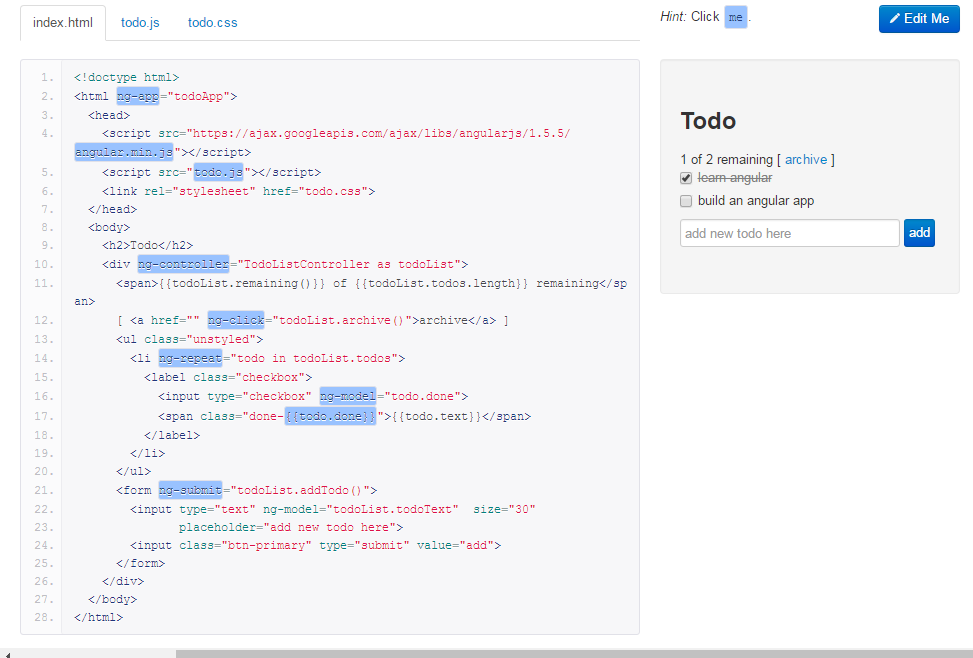
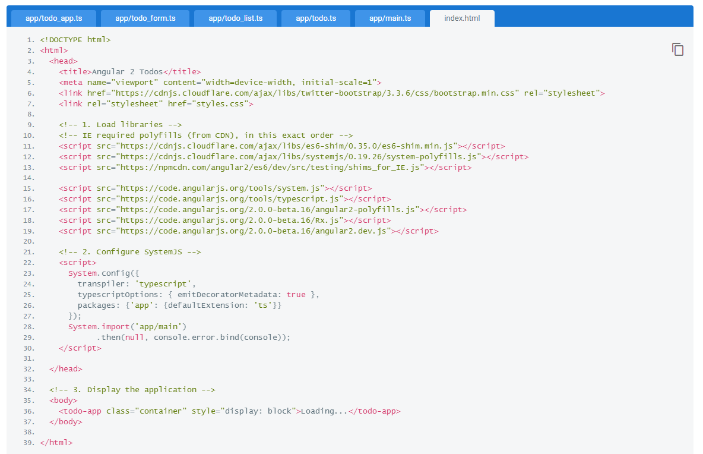
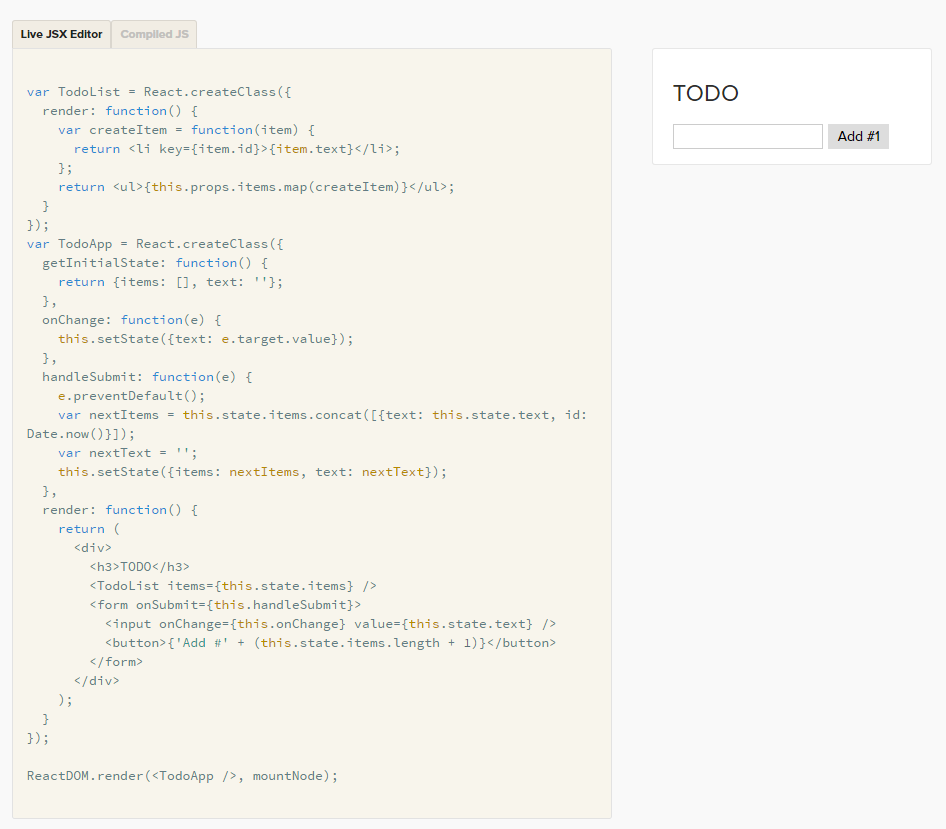

前端框架介绍及比较
angularjs1 vs angularjs2 vs reactjs
Created by zhangbiaoguang
1 angularjs1
1.1 what's angularJS?
AngularJS是一个MVW框架，它不是一个library!
client-side的解决方案
解耦性（html和逻辑，前后端）
跨浏览器
可扩展
可测试
1.2 Features
Module
Dependency Injection
Two way Data Binding
Directives
Components && Component Route(1.5)
Form varidation
Filters/Controllers/Services/Promise
1.3 DEMO
1.4 Advantages and Disadvantages
优点
- 非常适合Single page Application
- 致力于CRUD的应用
- 双向的数据绑定
- 提倡模块化且提供单元测试
- 依赖注入（很好的解耦和模块化）
- 提供可重用的组件
- 强大的社区支持及完善的官方文档
缺点
- 性能问题
- 学习曲线比较陡峭
- 复杂且调试困难
2 angularjs2
2.1 what's angularJS2?
SPEED & PERFORMANCE
SIMPLE & EXPRESSIVE
CROSS PLATFORM
FLEXIBLE DEVELOPMENT
COMPREHENSIVE ROUTING
DEPENDENCY INJECTION
LEGACY BROWSER SUPPORT(IE9+)
ANIMATIONS & INTERNATIONALIZATION (I18N) & ACCESSIBILITY
2.2 Features
Angular2 has no Controllers, No Two-Way data-binding, No more $scope
Written in TypeScript
Attribute Directive
Component Styles
Hierachicial injectors
HttpClient(移除了jqlite)
Routing & navigation
Pipes(filter)
Testing

2.3 DEMO
2.4 Advantages and Disadvantages
优点
- 拥抱web compent方式编程，立足于未来。
- Faster and modern browsers
- cross platform
- best performance
- 强大的routing及component
- Designed for the future
缺点
- 拥抱web compent方式编程，立足于未来。
- 入门要求高
- 开发中
3 reactjs
3.1 what's reactJs?
“ React is a library for building composable user interfaces. It encourages the creation of reusable UI components which present data that changes over time. Lots of people use React as the V in MVC. React abstracts away the DOM from you, giving a simpler programming model and better performance. React can also render on the server using Node, and it can power native apps using React Native. React implements one-way reactive data flow which reduces boilerplate and is easier to reason about than traditional data binding. ”
3.2 Features
Components & React elements
The Virtual DOM
JSX
Rendering
Props & State
Specs, Lifecycle, Events
Composition
One way DataFlow & Flux
3.3 DEMO
When the component's button is clicked, is called
The state is changed
React re-renders the component to the virtual DOM
The new virtual DOM is compared with the previous virtual DOM
React isolates what has changed and updates the browser DOM
1.4 Advantages and Disadvantages
优点
- 高性能
- 跨平台使用
- 客户端和服务器端都可以使用
- 容易调试、测试、可读性和维护性高
- 能够容易结合其他框架使用
缺点
- 使用JSX
- 库不是框架，需要自己考虑其他功能，如路由
4 Compare
三者比较是不平等的
4.1 basic
| Attribute | AngularJS | Angular 2 | React |
|---|---|---|---|
| Version | 1.5.7 | 2.0.0-beta.15 | 15.0.1 |
| Author | |||
| Language | JavaScript/HTML | TypeScript | JSX |
| Size | 154k | 583k | 143k |
| Github Stars | 48.8k | 11k | 41k |
| Github Contributors | 1,452 | 224 | 669 |
4.2 The Meta Stuff
| Attribute | AngularJS | Angular 2 | React |
|---|---|---|---|
| Churn | Reduced | Reduced | High |
| Tooling | Low | High | High |
| Code Design | JS into HTML | JS into HTML | JavaScript Centric |
| JavaScript “Fatigue” | Less | Less | More |
4.3 The Other Information
| Attribute | AngularJS | Angular 2 | React |
|---|---|---|---|
| DOM | Regular DOM | Regular DOM | Virtual DOM |
| Learning Curve | High | Medium | Low |
| Packaging | Weak | Medium | Strong |
| Abstraction | Weak | Strong | Strong |
| Debugging General | Good HTML / Bad JS | Good JS/Good HTML | Good JS / Bad HTML |
| Debug Line NO | No | No | Yes |
| Unclosed Tag Mentioned? | No | No | Yes |
| Attribute | AngularJS | Angular 2 | React |
|---|---|---|---|
| Fails When? | Runtime | Runtime | Compile-Time |
| Binding | 2 Way | 2 Way | Uni-Directional |
| Templating | In HTML | In TypeScript Files | In JSX Files |
| Component Model | Weak | Strong | Medium |
| Building Mobile? | Ionic Framework | Ionic Framework | React Native |
| MVC | Yes | Yes | View Layer Only |
| Rendering | Client Side | Server Side | Server Side |
5 In my word
1、如果项目是SPA应用，主要是CRUD的操作，只需要建立个web应用，业务逻辑复杂，需要一个强有力的框架介入，建议使用angularJS1；
2、如果项目是需要考虑性能、跨终端、业务逻辑不太复杂、服务器端渲染，或者是想要在旧项目引入来增强功能，建议使用reactjs;
3、由于angularJS2目前处于开发状态，而且拥抱的是标准的web component方式编程（立足于未来），暂时建议采取观望模式；
感言
“ 没有永恒的框架，只有永远需要实现的需求 ”
“ 技术都是为业务服务，业务一直都有，但是技术就是会更新换代，目前前端技术就到了应接不暇的程度。 不用太迷信某个框架，尤其是目前这些流行的框架，到底解决了全球多少前端的需求呢，可能 1% 都不到。 选择技术或者是框架，更多的应该看看能不能提高生产力，能提高多少，随着技术的演进，现在选择了这个技术，未来迁移的成本有多大？技术、需求、产品都有时效性，到时间了自然都会被淘汰。 ”